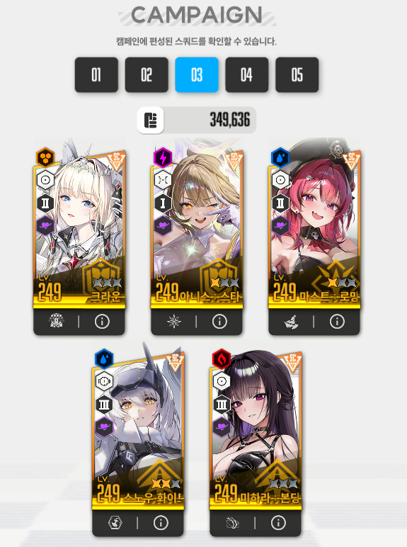

반갑다
공략에 앞서 "왜 없지?" 금지함
우선 클리어 조합은 이럼

뭐가 이상하다고?
그렇다 글쓴이는 라피가 없는 리세계를 샀음
3.5주년 20만원으로 준 별의궤적 아니었으면 미하라도 없었음
서론이 길었는데 공략 시작함
***각 니케의 모듈 수치와 장비강화는 유튭 설명란 참조***
--패턴--
우선 글러트니를 들어가자마자 2초지나면 공격력이 가장 높은 니케 1기에게 ㅈㄴ 아픈공격을 날림 이 공격은 엄폐를 해줘야함
이후 2분 50초쯤 촉수를 휘둘러 단일 니케에게 공격을 하는데 하단 캐릭터 UI 에 맞는대상이 나오니 엄폐해주자 이 공격은 크라운 보호막으로 막히니 보호막이 있는 경우 엄폐 필요 없음
2분 41초에도 똑같은 공격을 한다
이 다음 글러트니가 피부에 두꺼운 지방층을 둘러 받는피해감소( 받뎀감 )를 시전하는데 글러트니 주위로 시계 혹은 반시계 방향으로 저지원 ( 빨간원 ) 이 생기게됨
이때 저지원 안으로 들어가는 공격만 정상적으로 딜이 들어간다. 에임을 잘 조절해 저지원을 맞춰 주자.
그리고 첫 번째 저지원이 나온 직후 각 니케에게 일렉트릭 볼을 발사함 이 공격 또한 매우 아프므로 잠시 엄폐를 해주도록 하자
두번째 저지원이 생기고 바로 다음에 시작할때 날린 아픈 공격을 니케 1기에게 날림
세번째 저지원까지 생기는데 이때는 패턴이 없음
그리고 끝나자마자 뎀감지방층은 없어지고 입에서 요격 가능 날파리를 날림
그리고 대략 2분 07초부터 2분 50초에했던 촉수를 휘두르는 공격을 하고 똑같이 9초쯤 뒤 한번 더 시전함
이후 글러트니가 또 받뎀감을 시전하고 저지원이 생김 이때도 처음 시작할때 날린 매우 아픈 공격을 니케 1기에게 날림
여기서 달라지는점이 생기는데 첫번째 저지원은 저지가 되지않지만 두번째 저지원부터 저지가 되는것을 볼 수 있음
본인은 여기서 다섯번째 저지원까지 본 후 다음 패턴에 들어감
다섯번째 저지원이 사라진 후 글러트니가 꿈틀거린 후 광역공격을 시전함 이 공격은 크라운 방벽으로 막힘
이후 글러트니가 늪 아래로 가라앉았다가 눈앞에 튀어나옴 이때 글러트니가 보이지 않아도 늪아래를 쏘면 딜이 들어감
그리고 바로 암전저지가 나오는데 S 자형 혹은 S를 좌우로 뒤집은 형태의 저지가 총 두번 나옴
암전저지 이후 글러트니가 아래로 가라앉았다가 다시 위로 떠오르게되는데 이때도 딜이 들어감
이때 대략 12초 정도의 그로기 시간이 나옴
이후 글러트니가 바로 시작할때 날린 아픈 공격을 니케 1기에게 날림
그 다음 대략 37~36초 쯤 촉수를 휘두르는 공격을 하고 속성저지가 나옴
이후 글러트니가 다시 받뎀감을 두르고 저지원이 생긴 후 일렉트릭볼을 각각의 니케에게 날림
이때 본인은 첫번째와 두번째 저지원의 저지가 되지않았고 세번째 저지원부터 저지가 됨
여섯 번째 저지원이 끝나면 글러트니가 광역공격을 시전할거임
여기까지 보면 전투 시간이 약 3분 정도 지나
--택틱--
사실 글러트니는 택이랄게 별거 없음
크라운 도발컨만 제대로 해주면 딜러들은 딜타임을 온전히 가질 수 있게됨
여기까지 온 뉴비라면 크라운이 도발과 무적을 가지고 있다는걸 알거임
이 크라운 도발로 게임 시작하자마자 날린 아픈 공격을 모두 받아내기 위한 택틱임
시작하자마자 16스택 장전 -> 첫번째 저지원뜨면 발사
저지패턴 끝나고 날파리를 날릴 때 15스택 장전후 기다리다가 2분부터 발사
땅굴을 파고 기어나오기전에 10~11스택 장전하고 땅굴을 파고 나와서 쿠와아 할때 발사
마지막은 대충 그냥 3~5초쯤에 공격이 온다고 생각하고 도발컨을 해주면 됨
크라운 도발 스택은 ESC창을 들어가지않아도 이펙트를 켜놨으면 크라운 옆에 보일거고 이펙트를 꺼놨더라도 버프창의 작은 글씨가 올라가는것을 볼 수 있음
글씨가 안보이는 사람은 ESC를 눌러서 봐야하는데 ESC를 너무 많이하면 딜이 떨어진다는 소리를 들은적이 있어서 비추함
사실 라피 있는 니붕이면 나보다 훨씬 낮은 스펙에서도 충분히 깰거
다들 파이팅